Parceiros
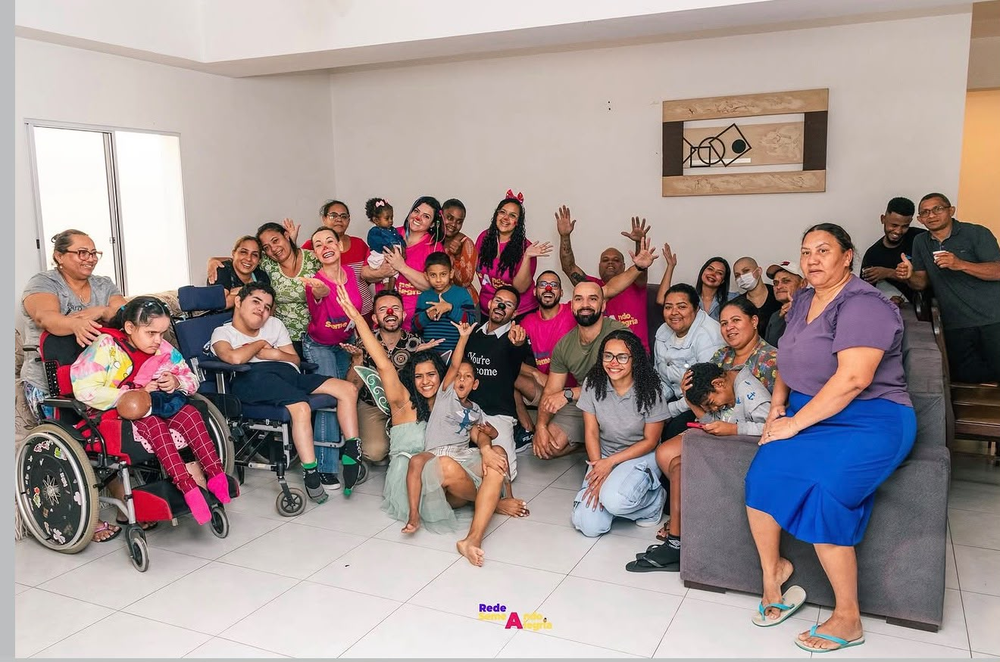
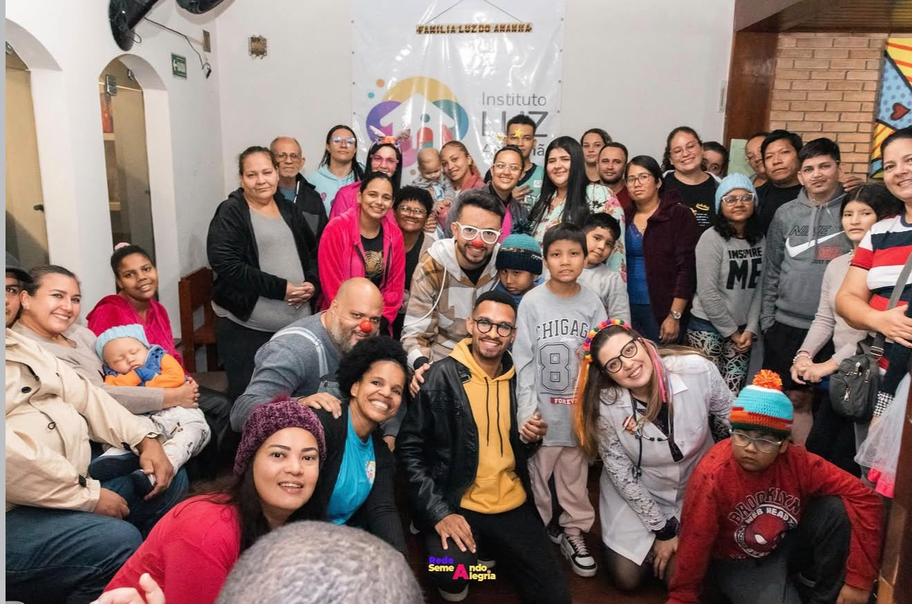
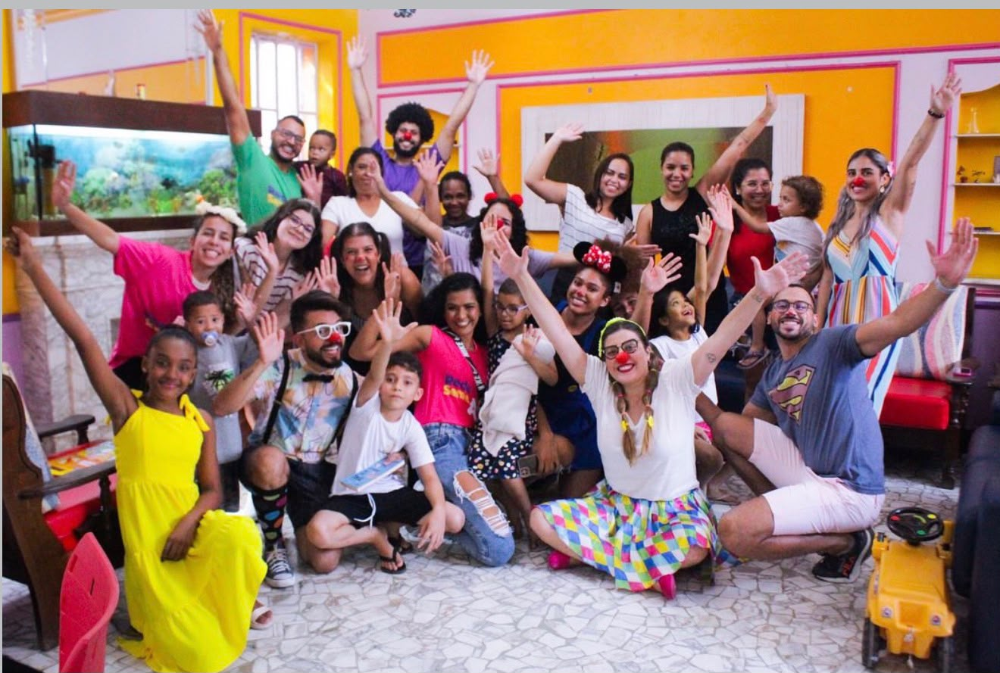
Levando amor, acolhimento e esperança através da risoterapia.
Quero ser voluntário Conheça a Rede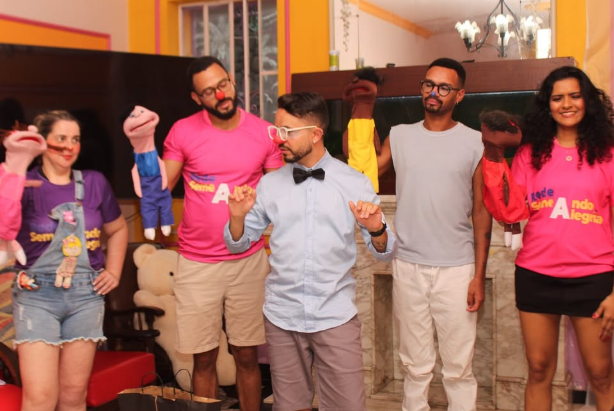
A Rede Semeando Alegria iniciou suas atividades em 2015, quando foi fundada por Dário Teixeira, que tinha como principal propósito levar bem estar e alegria a crianças que precisassem. Dário conheceu e estudou a Risoterapia, o que fortaleceu muito seus pensamentos e ideais. As poucos, a ideia foi crescendo e ganhando forma, com ajuda de pessoas muito especiais. Atualmente a Rede conta com uma equipe de voluntários que visita mensalmente Casas de Repouso e Casas de Apoio a crianças em tratamento contra o câncer, esse contato é o que traz sentido a todo amor depositado no projeto.
Semear alegria e transformar vidas.
Ser referência nacional em ações sociais.
Empatia, amor, respeito, alegria e compromisso.
Anos
Voluntários
Vidas Impactadas
Parceiros
Acreditamos que o riso é uma poderosa ferramenta de acolhimento.
De acordo com o autor do livro A Terapia do Riso, Eduardo Lambert, a alegria e o riso ajudam na resposta aos tratamentos e os mecanismos naturais de autocura.
"O riso treme, vibra nosso corpo e nos relaxa dando uma sensação de bem-estar. Ele ativa em nosso cérebro a produção de substâncias químicas que nos protegem contra acidentes vasculares cerebrais, estresse, problemas cardíacos e até depressão", afirma o médico. Quanto maior a intensidade da risada, maior será a produção dos neurotransmissores importantes para a saúde como as endorfinas e as serotoninas, que são antidepressivas.
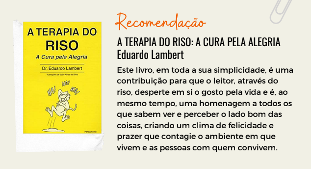
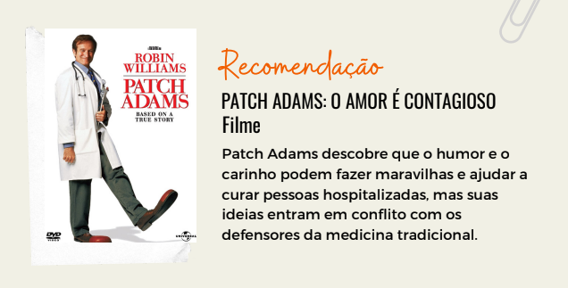
A psicopedagoga Rumilda Fernandes afirma que "o processo de cura depende da predisposição do paciente e da decisão de se curar”. A risoterapia pode ser aplicada por um terapeuta do riso que já tenha participado de grupos, estude o método e conheça a prática. Ao gargalhar, o indivíduo trabalha quase todos os músculos do rosto e do abdômen, promove maior oxigenação do cérebro, estimula a liberação da endorfina (substância que ameniza a dor e promove o prazer). A risada tem ainda efeito anestésico e aumenta a imunidade do organismo. Por isso, pesquisas realizadas nos EUA comprovaram que ela acelera o processo de cura e diminui o tempo de internações.



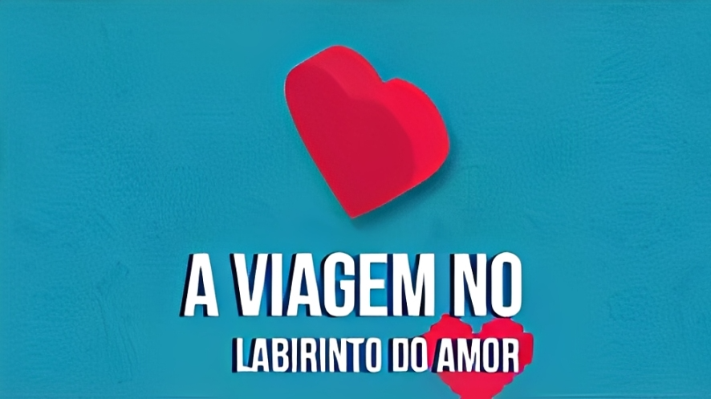
Show 7: Labirinto do Amor, da Rede Semeando Alegria, é uma live que promove uma reflexão sobre os desafios, sentimentos e escolhas presentes nos relacionamentos humanos. Por meio de dinâmicas e mensagens inspiradoras, o encontro convida o público a compreender o amor como um caminho de crescimento, empatia e superação. A transmissão destaca a importância do diálogo, do respeito e da valorização das pessoas que fazem parte de nossa vida. Além disso, incentiva os participantes a enxergarem o amor como uma força capaz de transformar realidades e fortalecer os laços comunitários. A live reforça a missão da Rede Semeando Alegria de levar esperança, acolhimento e valores humanos por meio de suas ações sociais e educativas.
Assistir no Youtube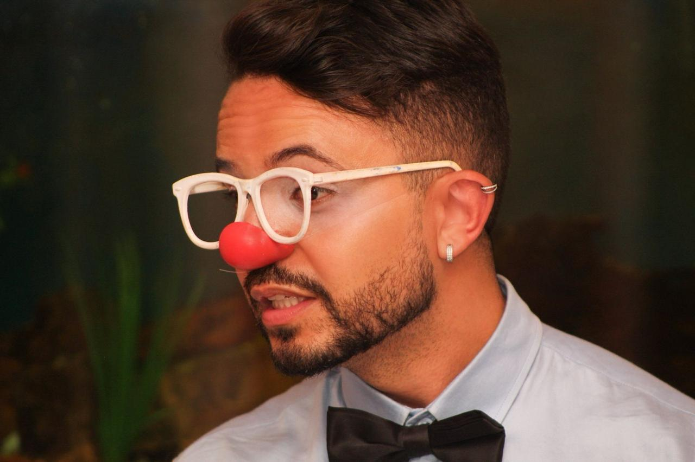
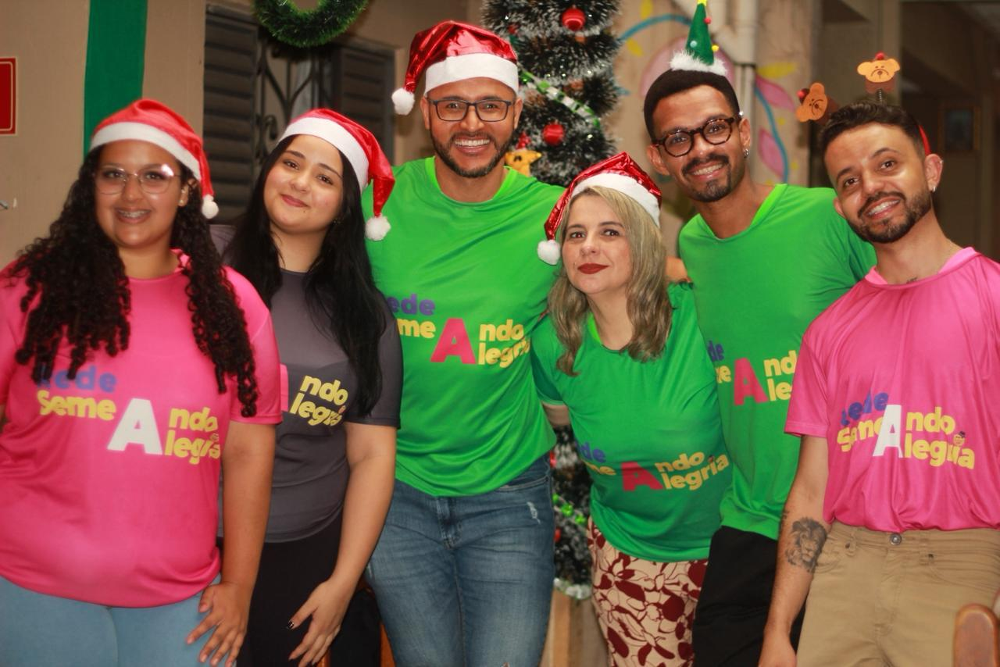
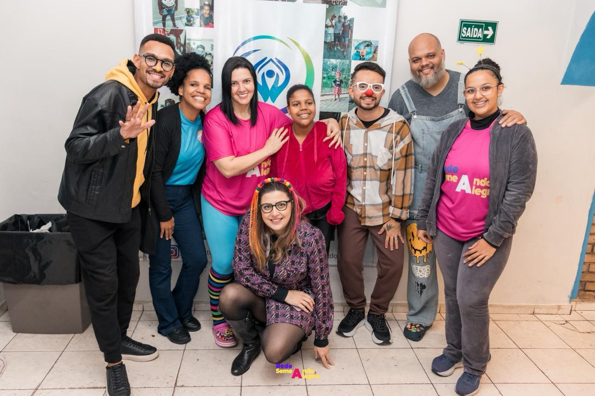
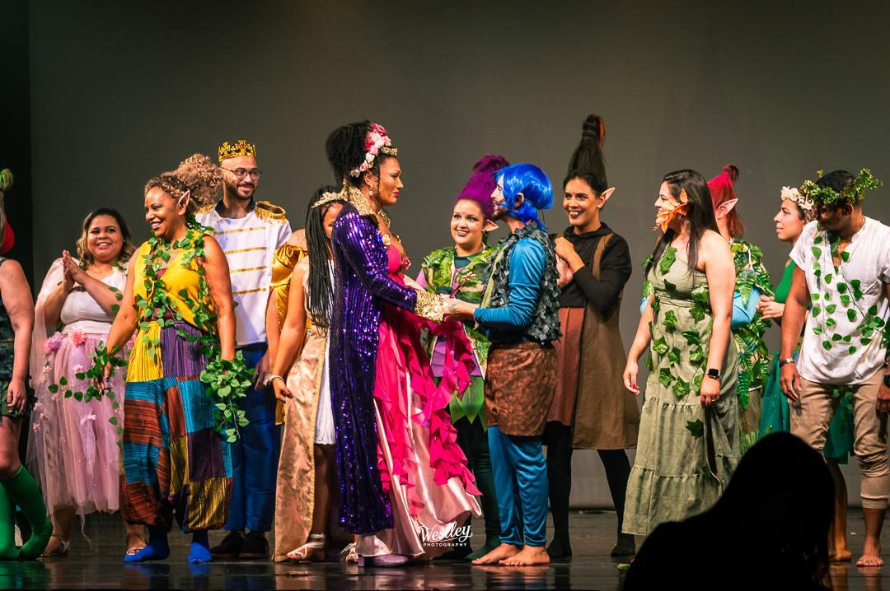
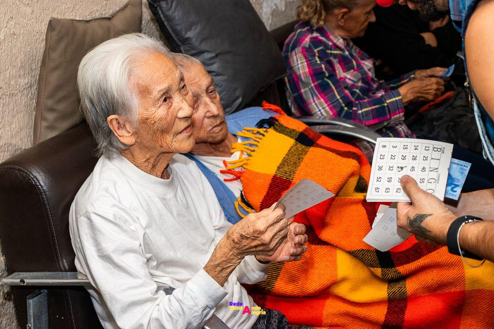
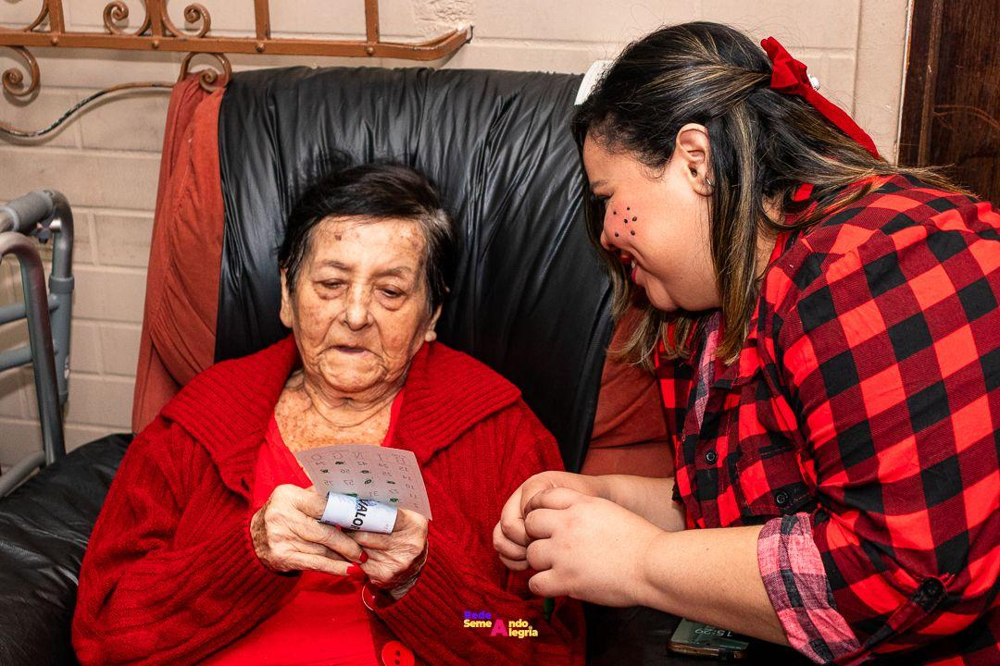